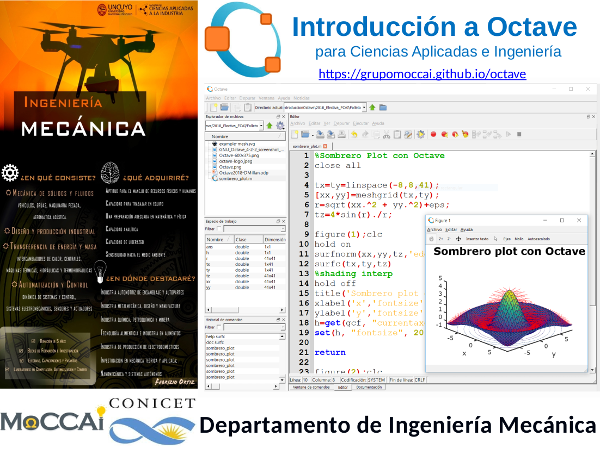

Esta obra está bajo una Licencia Creative Commons Atribución-NoComercial-CompartirIgual 4.0 Internacional
Introducción a OCTAVE
Este curso está orientado a estudiantes de Ingeniería Mecánica de la FCAI-UNCuyo, aunque pueden tomarlo estudiantes de otras carreras de ingeniería, que desean adquirir conocimientos y habilidades de programación básica en el empleo de programas interpretados en lenguaje m de GNU Octave/Matlab. Durante el curso se trabajará especialmente en desarrollar aspectos de cálculo vectorial, mediante la resolución de problemas simples de cálculo aplicados a problemas de ingeniería.
GNU Octave es un programa gratuito que emplea lenguaje de alto nivel, destinado principalmente a cálculos numéricos.
Link para descargar ==> GNU Octave
Enlace para meet ==> clase virtual ID: vwn-duoy-itb
Fechas y Horarios
- Fecha de inicio: 10:30hs, jueves 6 de MAYO de 2021.
- Horario de cursado: días jueves de 8:30hs a 12:00hs.
- Fecha de finalización: mediados de JUNIO (entrega de guías de problemas).
- Duración: 30 hs para carreras de grado (6 semanas).
- Las clases (PDF) se subirán a la web del grupo MoCCAI, en éstas se expondrán los conceptos teóricos y se resolverán ejemplos concretos, además se llevarán a cabo la resolución de guías de problemas.
Herramientas
- En Clases se irán subiendo los apuntes en PDF de las diferentes unidades, así como cualquier otro material referente a los contenidos.
- En Prácticas se ubicarán las guías de Trabajos Prácticos donde se detallan los ejercicios que deben ser entregados de forma obligatoria.
- En Biblio pueden encontrar material para conocer más detalles de como trabajar en OCTAVE/MATLAB.
- Se pueden encontrar las clases, guías de problemas y ejemplos del curso de Octave impartido en otras ediciones en:
Equipo Docente
- Nos encuentran principalmente en el Laboratorio de MoCCAI (aula 40 tercer piso – posgraduación).
- Grupo de Modelado Computacional en Ciencias Aplicadas e Ingeniería (MoCCAI).
Dr. Ing. Daniel Millán (responsable - Web Personal)
- Investigador Independiente CONICET y Profesor Titular FCAI - Dpto. Ingeniería Mecánica.
- dmillan@fcai.uncu.edu.ar
Ing. Nicolás Muzi
- Responsable de Prácticas de Laboratorio.
- Becario PhD Conicet.
- @nicolas Web Personal.
Ing. Eduardo Rodríguez
- Tutor de Prácticas de Laboratorio.
- Becario PhD Conicet y JTP FCAI - Dpto. Ingeniería Mecánica.
- @eduardo Web Personal.
Lic. Nora Moyano
- Tutor de Prácticas de Laboratorio.
- Becario PhD Conicet y JTP FCAI - Dpto. Ingeniería Mecánica.
- @nora Web Personal.
Rodrigo Bautista
- Tutor Alumno de Prácticas de Laboratorio.
- Estudiante FCAI - Ingeniería Mecánica.
Brian Villegas
- Tutor Alumno de Prácticas de Laboratorio.
- Estudiante FCAI - Ingeniería Mecánica.
Brando Martinelli
- Tutor Alumno de Prácticas de Laboratorio.
- Estudiante FCAI - Ingeniería Mecánica.
Heber Durán
- Tutor Alumno de Prácticas de Laboratorio.
- Estudiante FCAI - Ingeniería Mecánica.
Comentarios y recomendaciones

- Frustrarse es típico y temporal.
- La curva de aprendizaje vs contenido del curso es sigmoide.
- Persistencia y dedicación ¡Kovalski!
Créditos
Esta web está basada en la web https://introunix.github.io y aportes del Ing. Iván Ferrari.